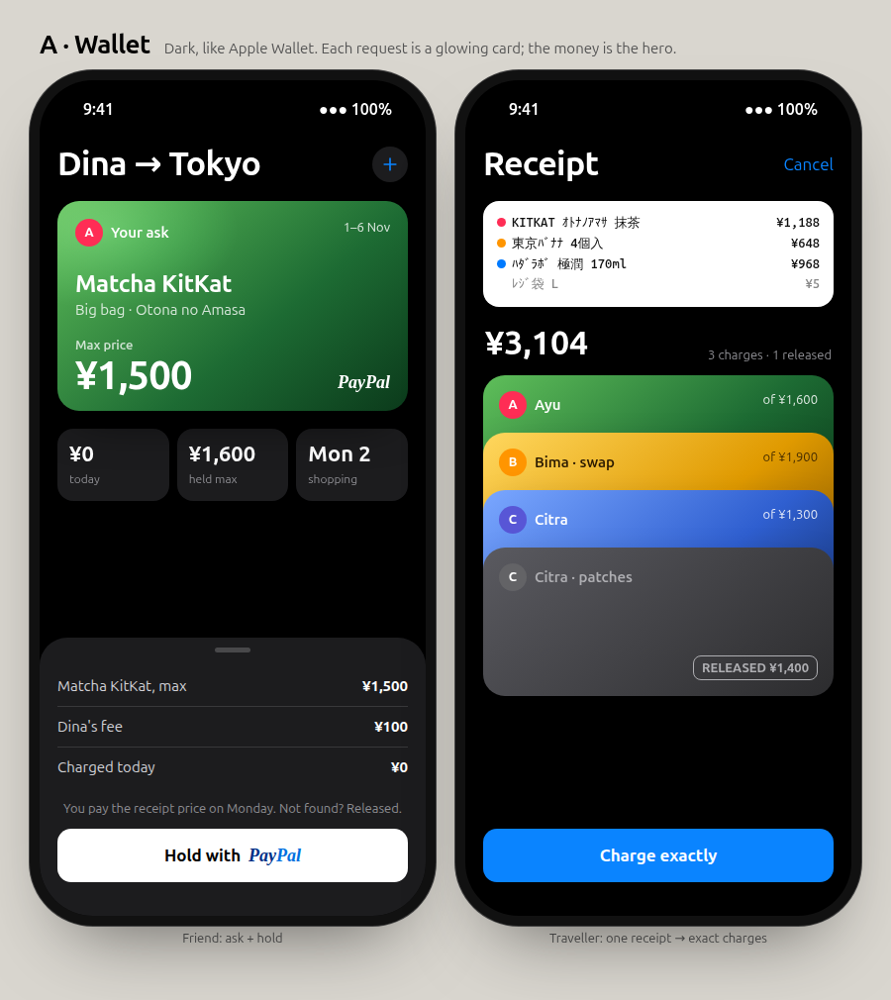
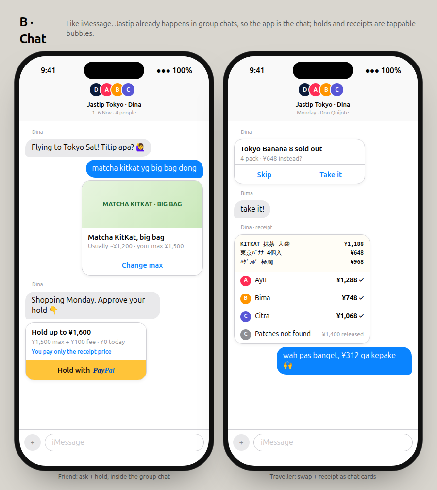
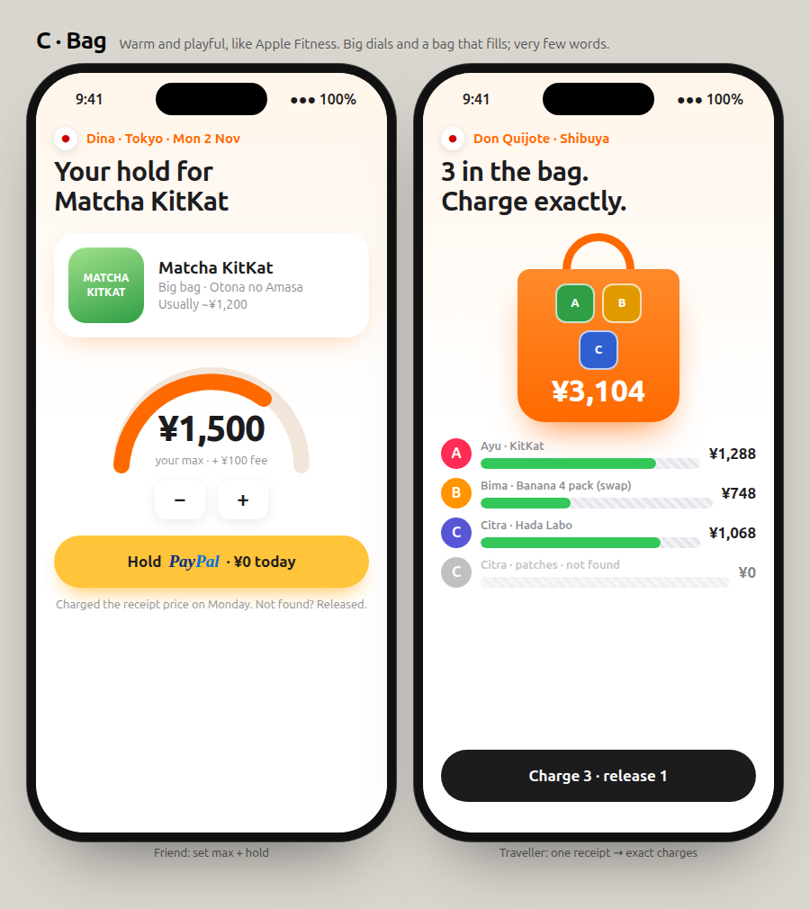
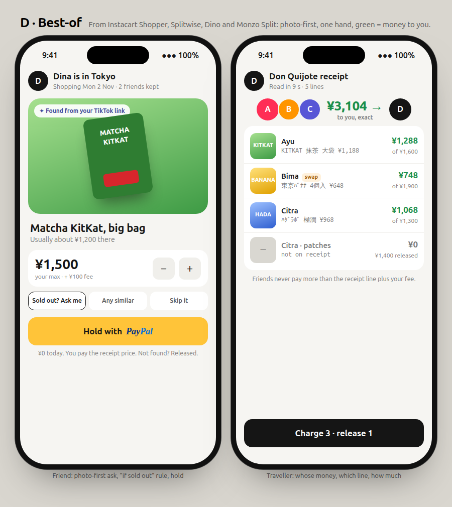

New:C · Bag full flow · E · Track full flow (Uber + money). Same two moments in each: a friend asks and holds, and the traveller's receipt becomes exact charges. Tell me A, B, C or D, or mix ("D, but chat like B").

A · Wallet Dark like Apple Wallet. Each request is a glowing card. Premium, money-first.

B · Chat The app is a group chat; holds, swaps and receipts are tappable bubbles. Closest to how jastip works today.

C · Bag Warm and playful. A dial for the max price, a bag that fills. Fewest words.

D · Best-of From Instacart Shopper, Splitwise, Dino, Monzo Split: photo-first, one hand, green = money to you, "if sold out" rule.